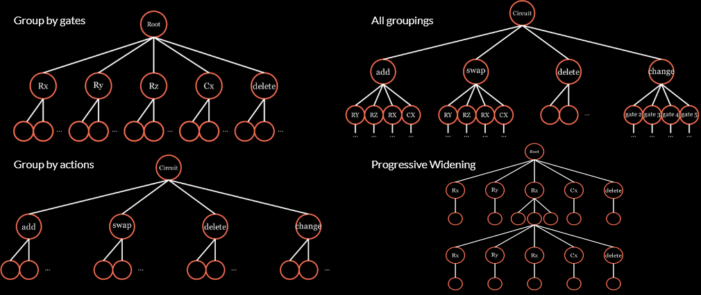
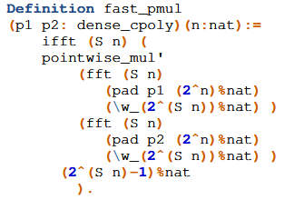
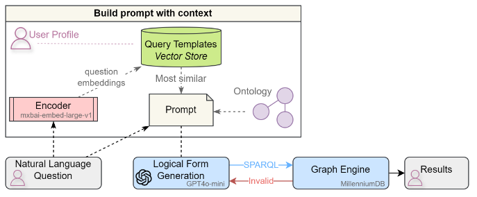
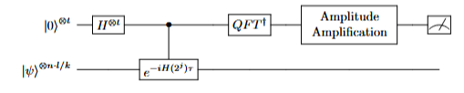
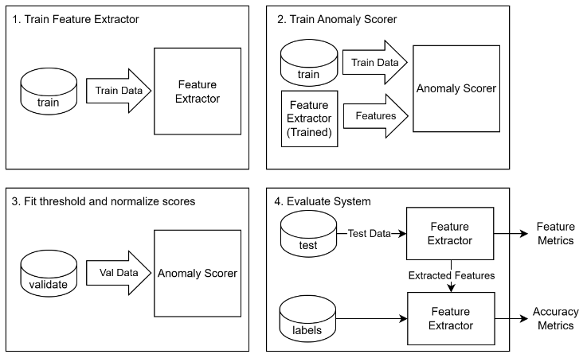
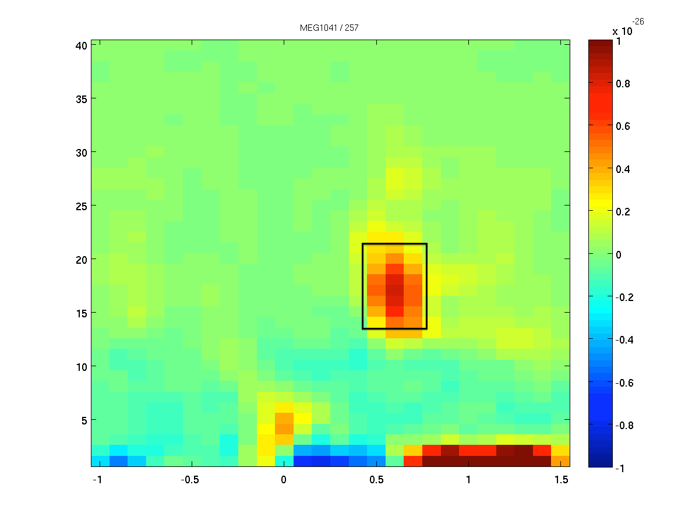

Projects
Research, internship, and coursework projects.
Featured

MSc Research Project · Search & Optimization · Quantum AI
MCTS for Quantum Ansatz Search
Variational quantum algorithms depend on selecting effective circuit structures over an exponentially large search space. Investigated MCTS variants tailored to structured ansätz search, designing decision-grouping strategies that reduce branching complexity and improve solution quality.
View project →
BSc Thesis · Formal & Reliable AI
Formalization of Fast Polynomial Multiplication in Rocq
Machine-checked proofs of numerical algorithms provide correctness guarantees beyond what testing alone can achieve. Formalized and verified FFT-based polynomial multiplication using the Rocq proof assistant, and contributed to a formally verified floating-point bounded arithmetic library.
View project →More Projects

MSc Research Project · Neuro-Symbolic AI · Knowledge Graphs
Question Answering over Medical Knowledge Graphs
The project developed a user-profile-driven pipeline that translates natural-language clinical questions into executable SPARQL queries, using curated question–query templates, contextual prompting, vector-based template retrieval, and MillenniumDB for fast query execution and validation. Results showed that template-grounded prompts significantly improved query correctness over baseline LLM prompting, while specific graph-engine error messages helped repair invalid queries efficiently.

MSC Research Project · Quantum Algorithms · Complexity Theory
Quartic Speedup Algorithm for Planted Inference
Implemented PennyLane simulations to evaluate a proposed quartic quantum speedup for planted inference across varying problem sizes and sparsity regimes. Identified practical limitations in extending the speedup from planted signal detection to full key recovery.

Internship · Sorama · Audio Signal Processing · Efficient AI
Incorporating Spatial Acoustic Information for Anomalous Sound Detection
Designed a modular anomaly detection framework at Sorama to benchmark spectral and spatial features from a 64-channel microphone array. Autoencoder-based systems with mel spectrogram features outperformed the existing Isolation Forest baseline, while spatial GCC-PHAT features showed competitive performance.

Internship · Sorama · Audio Signal Processing · Efficient AI
OngoingSound Event Localization and Detection
Developing efficient real-time SELD models using beamformed acoustic maps as structured spatial input features, replacing conventional MIC array representations with a more compact and localization-aware alternative. Investigating neuromorphic computing and sparse neural networks as pathways to edge deployment.